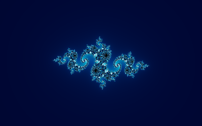
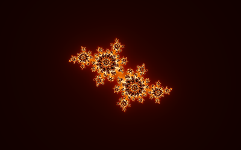
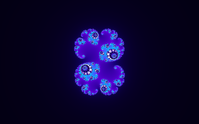
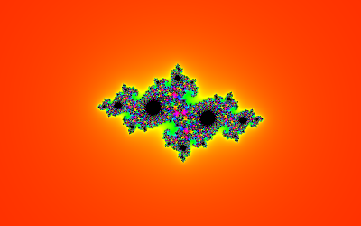
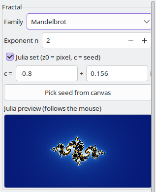

Julia sets
Every point c of the plane has a Julia set: the picture you get by iterating the same formula
with c held fixed and the pixel as the starting value z. Points c inside the Mandelbrot set give
connected Julia sets, points outside give dust, and points near the edge give the most intricate
shapes.
 |  |
| c = -0.8 + 0.156i | c = -0.4 + 0.6i |
 |  |
| c = 0.285 + 0.01i | c = -0.7269 + 0.1889i |
Try it: c = -0.8 + 0.156i,
Try it: c = -0.4 + 0.6i,
Try it: c = 0.285 + 0.01i,
Try it: c = -0.7269 + 0.1889i
The controls

- Julia set (z0 = pixel, c = seed) switches Julia mode on and off. Switching jumps to the
default Julia view (centre 0, zoom 0.75). Julia mode works with every family and exponent.
- The seed fields hold the constant c. A new value takes effect when you press Enter or
leave the field; something that is not a number is put back to the previous value.
- Pick seed from canvas: press it, then click a point of the picture. Mandelbrotter switches
to the Julia set of that point, resets the view and switches picking off again. Press the button
once more to leave picking mode without clicking.
- The Julia preview follows the mouse: outside Julia mode it shows the Julia set of the point
under the pointer, in Julia mode the set of the current seed. It uses 128 iterations and the current
palette, and it is blank while the mouse is off the picture.
The seed is an ordinary double-precision number, also at deep zoom.
Try it: watch the Julia set change as c walks around a circle
Contents